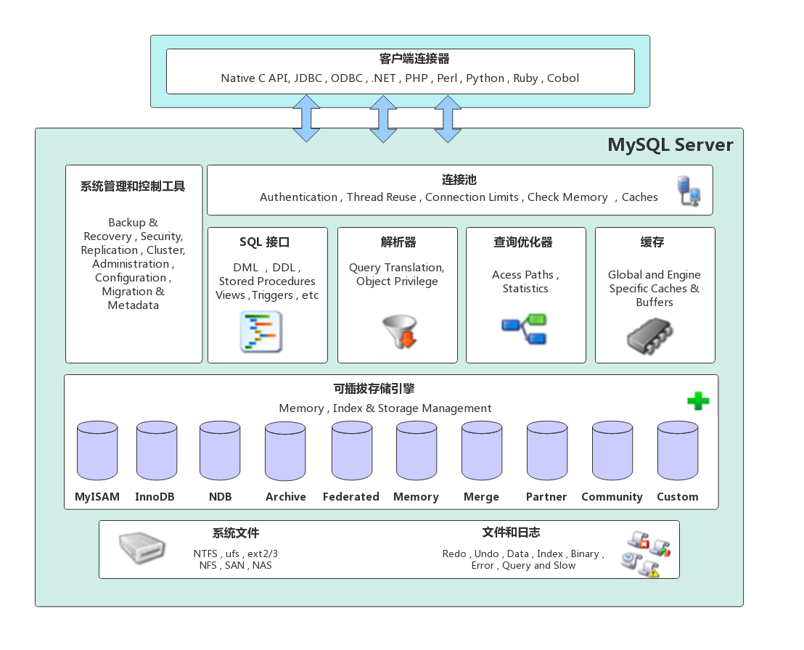
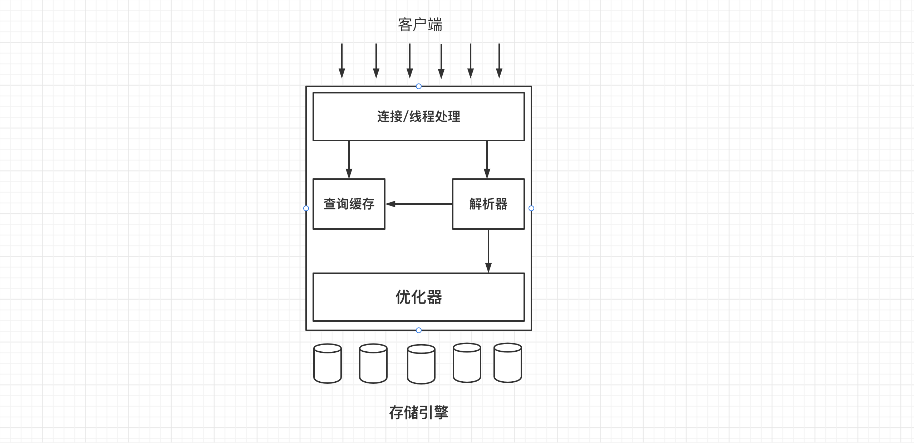
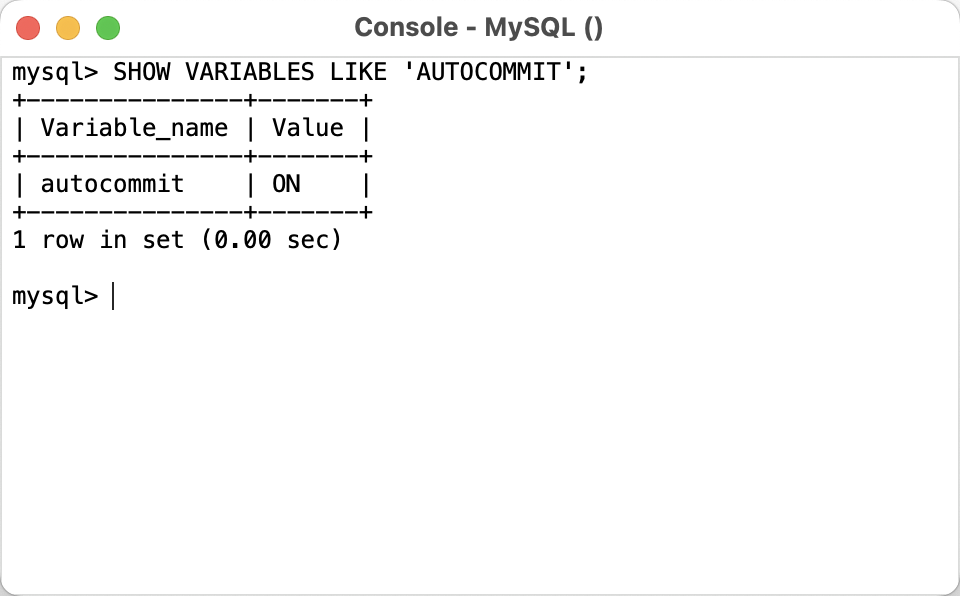

MySql逻辑架构


优化与执行
mysql会解析查询，并创建内部数据结构（解析树），然后对其进行各种优化，包括重写查询，决定表的查询顺序，以及选择合适的索引。用户可以通过一些特殊的关键字来影响MySQL的决策，提示（hint）优化器。也可以请求explain，使用户可以知道服务器是如何进行优化决策的。对于select语句来说，在解析查询之前，服务器会先检查查询缓存（Query Cache），如果能在其中找到对应的查询，服务器就不必再执行查询解析，而是直接返回查询缓存命中的结果集。
并发控制
这里只讨论mysql在两个层面进行的并发控制，服务器层与存储引擎层。
读写锁
共享锁（shared lock）
排它锁（exclusive lock）
也叫读锁（read lock）和写锁（write lock）
读锁是共享的，相互之前不会阻塞，多个连接可以在同一时间共同访问同一个资源。
写锁是排他的，一个写锁会阻塞其他的写锁与读锁。
锁粒度
一种提高共享资源并发性的方式就是让锁定对象更有选择性，尽量只锁定需要修改的那部分数据，而不是所有的资源，更理想的方式是，只会对需要修改的那部分数据片进行精确锁定，任何时候，在给定的资源上，锁定的数据量越小，则系统的并发度越高。只要相互之间不发生冲突即可。
但是加锁也是相当耗费资源的，锁的各种操作，获得锁，检查锁，释放锁。等等，如果花费大量的时间来管理锁，而不是存取数据，那么系统性能也无法保证。所谓的锁策略就是在锁的开销，与系统的数据的安全性之间寻求平衡。当然这种平衡也会影响到性能。
表锁（table lock）
表锁是mysql中的基本策略，并且是开销最小的策略。
在特定场景中，表锁也可能有良好的性能，例如：READ LOCAL 表锁支持某些类型的并发操作。另外写锁也比表锁有更高的优先级，因此一个写锁请求可能会被插入到读锁队列的前面。
尽管存储过程有自己的锁，MySQL本身还是会使用各种有效的表锁来实现不同的目的，例如，服务器会诸如ALTER TABLE 之类的语句使用表锁，而忽略存储引擎的行锁。
行级锁（row lock）
行级锁是mysql在存储引擎中实现的。行级锁只在存储引擎层实现。而mysql服务器层并没有实现行级锁。
事务
/Users/zhangqinzhong/Documents/typora/MySql/MySQL事务.md
死锁
死锁是指两个或多个事务在同一资源上相互占用，并请求对方已经锁定的资源，从而产生恶性循环的现象。
例如：
事务1：
1 | START TRANSACTION; |
事务2：
1 | START TRANSACTION; |
如果凑巧，两个事务都执行了第一行update语句，更新了一行数据，同时锁定了该行数据，接着都去执行第二行update语句，发现都已经被对方锁定，然后两个事务都在等待对方释放锁，同时又持有对方请求数据的锁，则会陷入死循环，造成死锁。除非有外部因素介入才可能解除死锁。
解决死锁的办法，各有不同，比如：当检测到死锁，立即返回一个错误。还有就是当查询的时间达到锁等待的超时时间就放弃锁的请求，这种方式通常不太友好。
InnoDB 的实现是将持有最少行级排它锁的事务进行回滚。
事务日志
事务日志可以帮助提高事务的效率。使用事务日志，存储引擎在修改表的数据的时候只需要修改它的内存拷贝，再把该修改行为记录到持久在硬盘上的事务日志中，而不用每次都讲修改的数据本身持久到磁盘。事务日志采用的是追加的方式。因此写日志是在一小块区域内的顺序I/O。而不需要到磁盘上的多个地方移动磁头。所以事务日志可以提高事务效率减少了I/O次数。然后后台再慢慢的将数据刷回到磁盘。这种方式被称为预写式日志（Write-Ahead Logging）。修改数据需要写两次磁盘。
MySQL中的事务
自动提交（AUTOCOMMIT）
MySQL默认采用自动提交模式。也就是说如果不是显式的开启一个事务，则默认每个查询都被当做是一个事务提交执行。在当前连接中可以通过设置AUTOCOMMIT变量来启用或禁用自动提交模式。
1 | SHOW VARIABLES LIKE 'AUTOCOMMIT'; |

1或者ON表示启用。0或者OFF表示禁用。
当AUTOCOMMIT=0时，表示所有的查询都在一个事务中，直到显式的执行COMMIT或者ROLLBACK，才表示该事务结束，同时又开启了一个新的事务。
修改AUTOCOMMIT对非事务类型的表，比如MyISAM或者内存表，不会有任何影响。对这类表没有COMMIT或者ROLLBACK的概念，也可以说是一直处于AUTOCOMMIT启用的状态。
还有一些命令会强制执行COMMIT，比如DDL语句。或者是导致大量数据改变的操作，比如ALTER TABLE。另外还有LOCK TABLES 等其他语句也会自动提交，如果有需要请检查相关对应版本的官方文档。
MySQL可以通过执行STE TRANSACTION ISOLATION LEVEL 命令来设置隔离级别，新的隔离级别会在下一个事务开始时生效。可以在配置文件中设置整个数据库的隔离级别。也可以只改变当前会话的隔离级别。
MySQL能识别4个ANSI隔离级别，InnoDB引擎也支持所有的隔离级别。
在事务中混合使用存储引擎
MySQL服务器层不管理事务，事务是由下层的存储引擎实现的，所以在同一个事务中使用多种存储引擎是不可靠的。因为非事务型的表无法回滚数据。
隐式和显式锁定
InnoDB 采用的是两阶段锁定协议（two-phase locking protocol）。在事务执行过程中，随时都会锁定，锁只有在执行COMMIT 或者ROLLBACK时候才会释放。并且所有的锁都是在同一时刻被释放，前面描述的都是隐式锁定，InnoDB会根据不同的隔离级别在需要的时候自动加锁。
另外，MySQL也支持显示锁定，这些语句不属于SQL规范。
- SELECT … LOCK IN SHARE MODE
- SELECT … FOR UPDATE
MySQL也支持LOCK TABLES 和 UNLOCK TABLES语句，这是在服务层实现的，和存储引擎无关，他们有自己的用途，但并不能代替事务，如果要使用事务，应该选择事务型存储引擎。
LOCK TABLES和事务之间相互影响的话，情况会变得非常复杂，在某些MySQL版本中甚至会产生无法预料的结果，因此，建议除了事务中禁用了AUTOCOMMIT，可以使用LOCK TABLES之外，其他任何时候都不要显式地执行LOCK TABLES，不管使用的是什么存储引擎。
多版本并发控制
MVCC是通过保存数据在某个时间点的快照来实现的。根据事务开启的不同时间，每个事务对同一张表，同一时刻看到的数据可能是不一样的。不同存储引擎对MVCC的实现是不同的，典型的有乐观（optimistic）并发控制，和悲观（pessimistic）并发控制。
InnoDB是一个多版本的存储引擎。它保留有关已更改行的旧版本的信息，以支持并发和回滚等事务功能。此信息存储在称为回滚段的数据结构中的撤消表空间中。请参阅第 15.6.3.4 节，“撤消表空间”。 InnoDB使用回滚段中的信息来执行事务回滚中所需的撤消操作。它还使用这些信息来构建行的早期版本以进行一致的读取。请参阅 第 15.7.2.3 节，“一致的非锁定读取”。
在内部，InnoDB为存储在数据库中的每一行添加三个字段：
- 一个 6 字节
DB_TRX_ID字段指示插入或更新行的最后一个事务的事务标识符。此外，删除在内部被视为更新，其中行中的特殊位设置为将其标记为已删除。 - 一个 7 字节的
DB_ROLL_PTR字段称为回滚指针。回滚指针指向写入回滚段的撤消日志记录。如果行已更新，则撤消日志记录包含在更新之前重建行内容所需的信息。 - 一个 6 字节的
DB_ROW_ID字段包含一个行 ID，该行 ID 随着新行的插入而单调增加。如果InnoDB自动生成聚集索引，则索引包含行 ID 值。否则，该DB_ROW_ID列不会出现在任何索引中。
If you like this blog or find it useful for you, you are welcome to comment on it. You are also welcome to share this blog, so that more people can participate in it. If the images used in the blog infringe your copyright, please contact the author to delete them. Thank you !